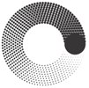

Полезные ресурсы
Организация-партнер

Московский Политех
Официальный сайт университета. На базе Московского Политеха разрабатывается проект BindWord XP.
Технологии проекта
SpaCy
Промышленная библиотека для обработки естественного языка на Python, используемая в нашем проекте.
NLTK
Набор библиотек и программ для обработки естественного языка.
PyQt
Библиотека для создания графического интерфейса на Python.
Документация проекта
Описание интерфейса BindWord XP
Основной интерфейс
Главное окно (MainWindow) — это центр работы пользователя с программой. Здесь можно ввести текст, запустить нужный тип анализа и посмотреть результаты в виде таблиц, графиков и текстов.
Панель управления
- Файл - меню для загрузки и сохранения текстов
- Сохранить - сохраняет результаты анализа (.txt, .csv, .json)
- Проверка - предварительная проверка текста
- Слова - анализ частотности слов
- Векторы - векторное представление текста (Word2Vec, TF-IDF)
- Комбинации - анализ n-грамм
- Тематический анализ - выявление скрытых тем (LDA/NMF)
- Распознавание сущностей (NER) - выделение имен, организаций, дат
- Переключатель модели - выбор языка анализа
- Кнопка Старт - запуск анализа
Центральное текстовое поле
Для ввода текста вручную или автоматически при открытии файла.
Правый блок интерфейса
Вкладки с результатами анализа: таблицы слов, комбинации, тематические блоки, именованные сущности.
Нижний блок
Графики частот слов, визуализация n-грамм, t-SNE проекция векторов, тематические связи.
Строка состояния
Показывает количество слов и время анализа.